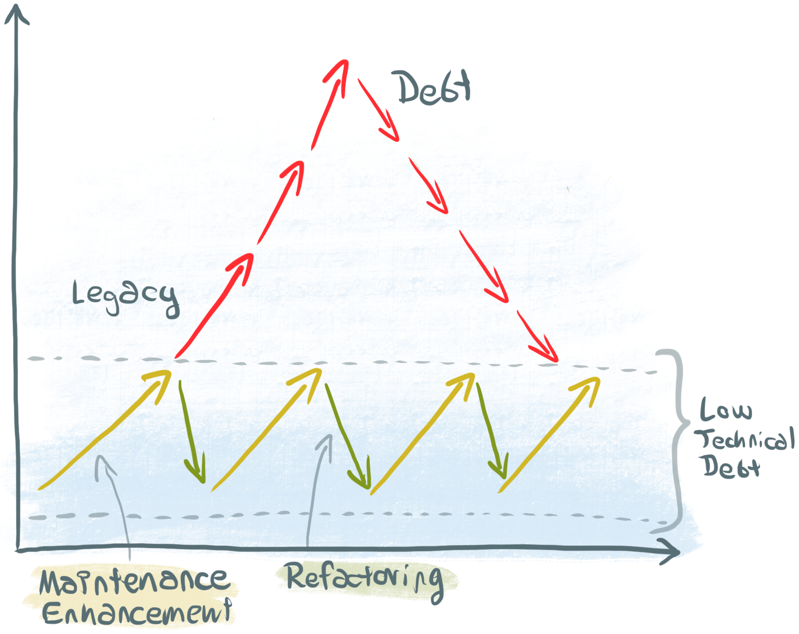
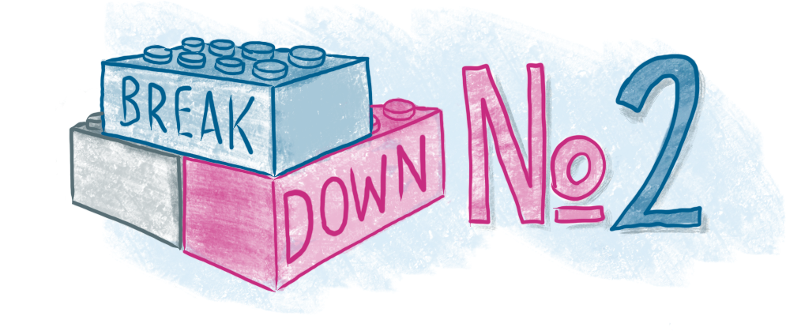

Patrick Hund | Lead Frontend Developer | @wiekatz

Slide: a small castle on the green field
Slide: castle has additional towers, turrets and oriels
Slide: even more additional building, but some cracks in the wall and broken
windows
Slide: More buildings, more cracks, more broken windows, tower that is about to
tumble propped up with a crutch
Slide: The word „Technical Debt", the broken castle picture with low opacity in
the background

(source: Dr.
Carola Lilienthal)

Slide: Lego bricks, neatly aligned next to each other, labelled “Header”,
„Footer“, „Pagination“, „Search Form“, „Item List“, „Picture Gallery“, „Advertising"
Slide: Same lego bricks, assembled to create a structure that resembles a web
page (🤔 perhaps like a castle, to reference earlier slides?)
Slide: Part of the web page structure is renewed by replacing some of the
bricks
Slide: „Big ball of mud", 🤔 with Lego bricks

Separating Logic and Layout
A Simple Start…
Presentational and Container Components
Separated Dumb Components
Recompose FTW!
Recomposed Spinner
Separate Enhancers

Separate Layout Components Styleguide
UI in Separate Repository
Living Styleguide with Storybook
Activity diagram that explains how it works
😱 Why all the complexity?
Why all that boilerplate code?
Revised code example with hydration from root node
Lego brick drawing with studs – each stud with label
Drawing state schema and how the module gets its data from it
Selectors to the rescue!
todo
final code example with selectors
Screenshot of modular toolkit repo on GitHub
URL
Thank you!
|
Ninja Maaß
Frontend Developer
|
Daniel Schäfer
Frontend Developer
|
Eike Schulte-Kersmecke
Backend Developer
|
|
Anja Kunkel
Backend Developer
|
Torsten Walter
Frontend Developer
|
Juho Vepsäläinen
Dev Consultant
|
|
Mike Krüger
Quality Assurance
|
Hajo Skwirblies
Site Operations
|
Florian Stefan
Architect
|
|
Christoph Springer
Team Lead
|
Julia Thiele
Product Owner
|
Jakob Gehring
Product Owner
|
View this presentation online: bit.ly/break-react
Patrick Hund | Lead Frontend Developer | @wiekatz